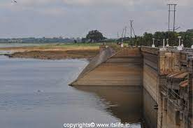
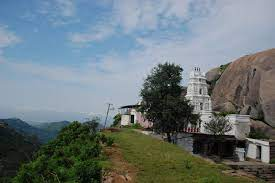

Popular Places of Mysore
Markonahalli

Markonahalli Dam is a dam built across the Shimsha River in the Kunigal Taluk. It was
built by Krishnaraja Wadiyar IV, the King of Mysuru under the guidance
of his Diwan Bharat Ratna Sir M. Visvesvaraya. This project is very unique because of
the technology that is used.
This was arguably the first dam to get built using the Siphon system
Pavagada
Pavagada is a taluk headquarter known for popular Pavagada Fort. Pavagada Fort is at a
height of 700 meters, offered seven layers of fortification to its residents
and was built by the Vijayanagara rulers.Resting places are available on the way up,
cool breeze will offer some respite in otherwise usually hot weather.
A Hanuman temple is located halfway uphill.
Madhugiri Fort

Madhugiri is a single hill and believed to be the second largest monolith in Asia.
Madhugiri Fort is built on the top, perched on a steep slope of the hill.
It is also a sought after one-day trekking trip from Bengaluru city, and easily
accessible including by public transport.
The trek here is between moderate to difficult given the steep climb
Devarayanadurga

the hilly terrain of Devarayanadurga, are various holy spots like the temples dedicated
to Yoga Lakshmi Narasimha Swamy, Bhoga Narasimha Swamy
and the Sanjivaraya Temple dedicated to Lord Hanuman. Near the Narasimha Temple are
three sacred ponds called Narasimha Teertha, Parashara Teertha
and the Pada Teertha. The Pada Teertha is inside a large cave.Devarayanadurga is an
ideal spot for trekking
India Food Park

India Food Park is one of the Mega Food Parks in India. Mega Food Park is a scheme of
the Ministry of Food Processing Industries,
Government of India that aims at providing a mechanism to link agricultural production
to the market by bringing together farmers, processors and
retailers so as to ensure increasing
farmers income and creating employment opportunities particularly in rural sector
Kaggaladu Bird Sanctuary

A nondescript village in Tumakuru district in Karnataka wakes up each year to the raucous cries and
colourful plumage of painted storks and grey herons, as they nest
on old tamarind trees amidst the houses. The Kaggaladu Bird Sanctuary is said to be the
second largest painted storks’ sanctuary in South Asia,
after Kokrebellur Bird Sanctuary in Mandya district


{kind=link}
{kind=link}
{kind=link}
{kind=link}
{kind=link}
{kind=link}